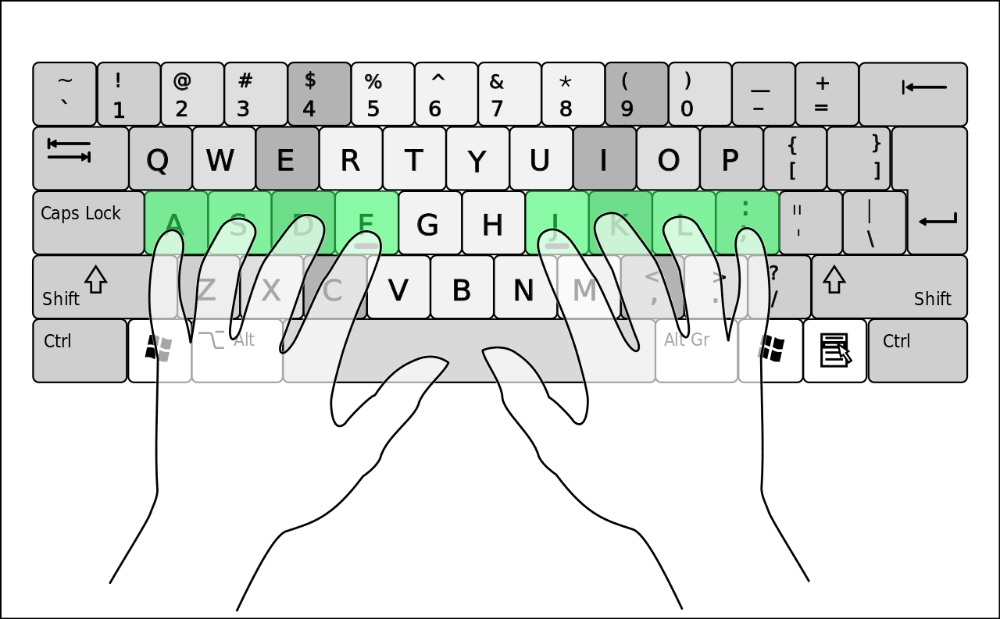
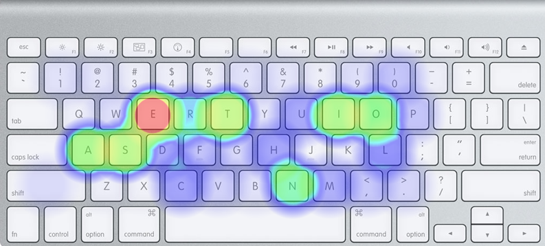
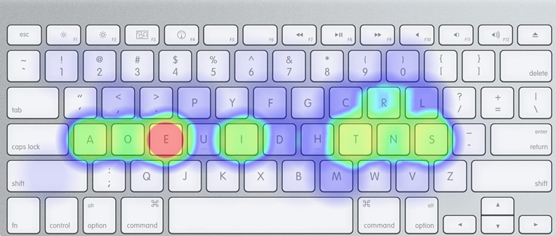
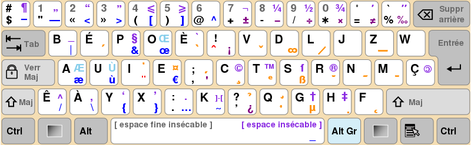
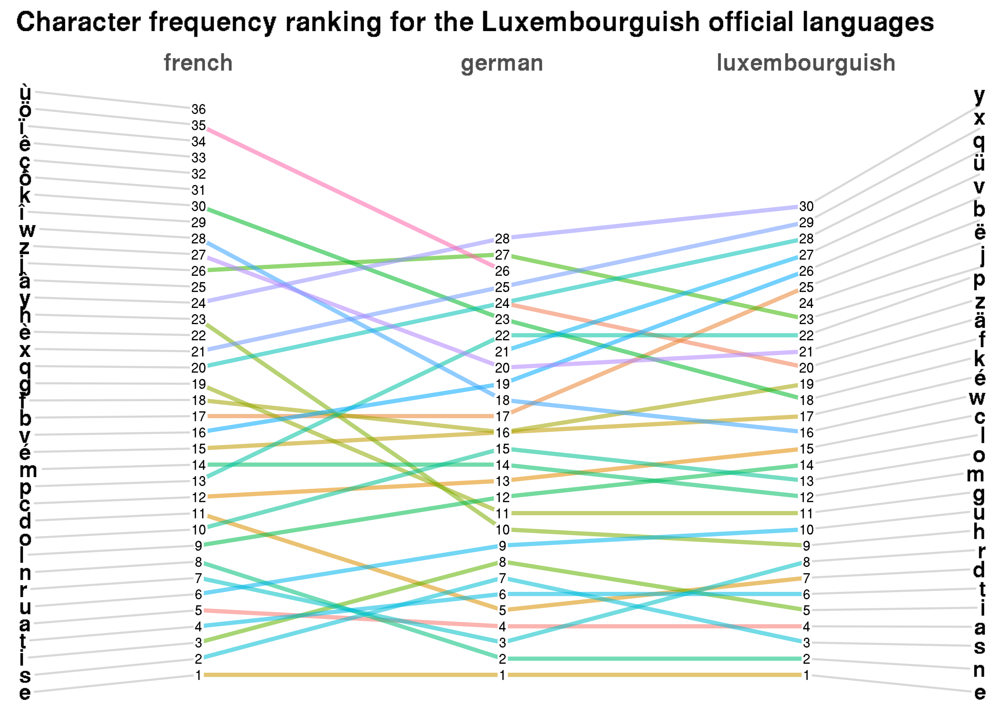

What would a keyboard optimised for Luxembourguish look like?
I’ve been using the BÉPO layout for my keyboard since 2010-ish, and it’s been one of the best computing decisions I’ve ever taken. The BÉPO layout is an optimized layout for French, but it works quite well for many European languages, English included (the only issue you might have with the BÉPO layout for English is that the w is a bit far away).
To come up with the BÉPO layout, ideas from a man named August Dvorak were applied for the French language. Today, the keyboard layout that is optimised for English is called after him, the DVORAK layout. Dvorak’s ideas were quite simple; unlike the QWERTY layout, his layout had to be based on character frequency of the English language. The main idea is that the most used characters of the language should be on the home row of the keyboard. The home row is the row where you lay your fingers on the keyboard when you are not typing (see picture below).

The problem with the “standard” layouts, such as QWERTY, is that they’re all absolute garbage, and not optimized at all for typing on a computer. For instance, look at the heatmap below, which shows the most used characters on a QWERTY keyboard when typing an a standard English text:

(Heatmap generated on https://www.patrick-wied.at/projects/heatmap-keyboard/.)
As you can see, most of the characters used to type this text are actually outside of the home row, and the majority of them on the left hand side of the keyboard. The idea of Dvorak was to first, put the most used characters on the home row, and second to try to have an equal split of characters, 50% for each hand.
The same text on the DVORAK layout, shows how superior it is:

As you can see, this is much much better. The same idea was applied to develop the BÉPO layout for French. And because character frequency is quite similar across languages, learning a layout such as the BÉPO not only translates to more efficient typing for French, but also for other languages, such as English, as already explained above.
The reason I’m writing this blog post is due, in part, to the confinement situation that many people on Earth are currently facing due to the Corona virus. I have a job where I spend my whole day typing, and am lucky enough to be able to work from home. Which means that I’m lucky enough to use my mechanical keyboard to work, which is really great. (I avoid taking my mechanical keyboard with me at work, because I am never very long in the same spot, between meeting and client assignments…). But to have a mechanical keyboard that’s easy to take with me, I decided to buy a second mechanical keyboard, a 40% keyboard from Ergodox (see picture below):

Because I don’t even want to see the QWERTY keycaps, I bought blank keycaps to replace the ones that come with the keyboard. Anyway, this made me think about how crazy it is that in 2020 people still use absolute garbage keyboard layouts (and keyboards by the way) to type on, when their job is basically only typing all day long. It made me so angry that I even made a video, which you enjoy here.
The other thing I thought about was the specific case of Luxembourg, a country with 3 official languages (Luxembourguish, French and German), a very large Portuguese minority, and where English became so important in recent years that the government distributed leaflets in English to the population (along with leaflets in French, Luxembourguish, German and Portuguese of course) explaining what is and is not allowed during the period of containment. What would a keyboard optimized for such a unique country look like?
Of course, the answer that comes to mind quickly is to use the BÉPO layout; even though people routinely write in at least 3 of the above-mentioned languages, French is still the one that people use most of the time for written communication (at least, that’s my perception). The reason is that while Luxembourguish is the national language, and the language of the native population, French has always been the administrative language, and laws are still written in French only, even though they’re debated in Luxembourguish in the parliament. However, people also routinely write emails in German or English, and more and more people also write in Luxembourguish. This means that a keyboard optimized for Luxembourguish, or rather, for the multilinguistic nature of the Luxembourguish country, should take into account all these different languages. Another thing to keep in mind is that Luxembourguish uses many French words, and as such, writing these words should be easy.
So let’s start with the BÉPO layout as a base. This is what it looks like:

A heatmap of character frequencies of a French, or even English, text would show that the most used characters are on the home row. If you compare DVORAK to BÉPO, you will see that the home row is fairly similar. But what strikes my colleagues when they see a picture of the BÉPO layout, is the fact that the characters é, è, ê, à and ç can be accessed directly. They are so used to having these characters only accessible by using some kind of modifier key that their first reaction is to think that this is completely stupid. However, what is stupid, is not having these letters easily accessible, and instead having, say, z easily accessible (the French “standard” layout is called AZERTY, which is very similar and just as stupid as the QWERTY layout. The letter Z is so easy to type on, but is almost non-existing in French!).
So let’s analyze character frequencies of a Luxembourguish text and see if the BÉPO layout could be a good fit. I used several text snippets from the Bible in Luxembourguish for this, and a few lines of R code:
library(tidyverse)
library(rvest)root_url <- "https://cathol.lu/article"
texts <- seq(4869,4900)
urls <- c("https://cathol.lu/article4887",
"https://cathol.lu/article1851",
"https://cathol.lu/article1845",
"https://cathol.lu/article1863",
"https://cathol.lu/article1857",
"https://cathol.lu/article4885",
"https://cathol.lu/article1648",
"https://cathol.lu/article1842",
"https://cathol.lu/article1654",
"https://cathol.lu/article1849",
"https://cathol.lu/article1874",
"https://cathol.lu/article4884",
"https://cathol.lu/article1878",
"https://cathol.lu/article2163",
"https://cathol.lu/article2127",
"https://cathol.lu/article2185",
"https://cathol.lu/article4875")Now that I’ve get the urls, let’s get the text out of it:
pages <- urls %>%
map(read_html)
texts <- pages %>%
map(~html_node(., xpath = '//*[(@id = "art_texte")]')) %>%
map(html_text)
texts is a list containing the raw text from the website. I used several functions from the {rvest} package to do this. I won’t comment on them, because this is not a tutorial about webscraping (I’ve written several of those already), but a rant about keyboard layout gosh darn it.
Anyway, let’s now take a look at the character frequencies, and put that in a neat data frame:
characters <- texts %>%
map(~strsplit(., split = "")) %>%
unlist() %>%
map(~strsplit(., split = "")) %>%
unlist() %>%
tolower() %>%
str_extract_all(pattern = "[:alpha:]") %>%
unlist() %>%
table() %>%
as.data.frame()Computing the frequencies is now easy:
characters <- characters %>%
mutate(frequencies = round(Freq/sum(Freq)*100, digits = 2)) %>%
arrange(desc(frequencies)) %>%
janitor::clean_names()
Let’s start with the obvious differences: there is not a single instance of the characters è, ê or ç, which are used in French only. There are however instances of ü, ä, and ë. These characters should be easily accessible, however their frequencies are so low, that they could still only be accessible using a modifier key, and it would not be a huge issue. However, since ç does not appear at all, maybe it could be replaced by ä and ê could be replaced by ë. But we must keep in mind that since the average Luxembourger has to very often switch between so many languages, I would suggest that these French characters that would be replaced should still be accessible using a modifier such as Alt Gr. As for the rest, the layout as it stands is likely quite ok. Well, actually I know it’s ok, because when I write in Luxembourguish using the BÉPO layout, I find it quite easy to do. But let’s grab a French and a German text, and see how the ranking of the characters compare. Let’s get some French text:
Click to read the French text
french <- "Au commencement, Dieu créa les cieux et la terre.
La terre était informe et vide: il y avait des ténèbres à la surface de l'abîme, et l'esprit de Dieu se mouvait au-dessus des eaux.
Dieu dit: Que la lumière soit! Et la lumière fut.
Dieu vit que la lumière était bonne; et Dieu sépara la lumière d'avec les ténèbres.
Dieu appela la lumière jour, et il appela les ténèbres nuit. Ainsi, il y eut un soir, et il y eut un matin: ce fut le premier jour.
Dieu dit: Qu'il y ait une étendue entre les eaux, et qu'elle sépare les eaux d'avec les eaux.
Et Dieu fit l'étendue, et il sépara les eaux qui sont au-dessous de l'étendue d'avec les eaux qui sont au-dessus de l'étendue. Et cela fut ainsi.
Dieu appela l'étendue ciel. Ainsi, il y eut un soir, et il y eut un matin: ce fut le second jour.
Dieu dit: Que les eaux qui sont au-dessous du ciel se rassemblent en un seul lieu, et que le sec paraisse. Et cela fut ainsi.
Dieu appela le sec terre, et il appela l'amas des eaux mers. Dieu vit que cela était bon.
Puis Dieu dit: Que la terre produise de la verdure, de l'herbe portant de la semence, des arbres fruitiers donnant du fruit selon leur espèce et ayant en eux leur semence sur la terre. Et cela fut ainsi.
La terre produisit de la verdure, de l'herbe portant de la semence selon son espèce, et des arbres donnant du fruit et ayant en eux leur semence selon leur espèce. Dieu vit que cela était bon.
Ainsi, il y eut un soir, et il y eut un matin: ce fut le troisième jour.
Dieu dit: Qu'il y ait des luminaires dans l'étendue du ciel, pour séparer le jour d'avec la nuit; que ce soient des signes pour marquer les époques, les jours et les années;
et qu'ils servent de luminaires dans l'étendue du ciel, pour éclairer la terre. Et cela fut ainsi.
Dieu fit les deux grands luminaires, le plus grand luminaire pour présider au jour, et le plus petit luminaire pour présider à la nuit; il fit aussi les étoiles.
Dieu les plaça dans l'étendue du ciel, pour éclairer la terre,
pour présider au jour et à la nuit, et pour séparer la lumière d'avec les ténèbres. Dieu vit que cela était bon.
Ainsi, il y eut un soir, et il y eut un matin: ce fut le quatrième jour.
Dieu dit: Que les eaux produisent en abondance des animaux vivants, et que des oiseaux volent sur la terre vers l'étendue du ciel.
Dieu créa les grands poissons et tous les animaux vivants qui se meuvent, et que les eaux produisirent en abondance selon leur espèce; il créa aussi tout oiseau ailé selon son espèce. Dieu vit que cela était bon.
Dieu les bénit, en disant: Soyez féconds, multipliez, et remplissez les eaux des mers; et que les oiseaux multiplient sur la terre.
Ainsi, il y eut un soir, et il y eut un matin: ce fut le cinquième jour.
Dieu dit: Que la terre produise des animaux vivants selon leur espèce, du bétail, des reptiles et des animaux terrestres, selon leur espèce. Et cela fut ainsi.
Dieu fit les animaux de la terre selon leur espèce, le bétail selon son espèce, et tous les reptiles de la terre selon leur espèce. Dieu vit que cela était bon.
Puis Dieu dit: Faisons l'homme à notre image, selon notre ressemblance, et qu'il domine sur les poissons de la mer, sur les oiseaux du ciel, sur le bétail, sur toute la terre, et sur tous les reptiles qui rampent sur la terre.
Dieu créa l'homme à son image, il le créa à l'image de Dieu, il créa l'homme et la femme.
Dieu les bénit, et Dieu leur dit: Soyez féconds, multipliez, remplissez la terre, et l'assujettissez; et dominez sur les poissons de la mer, sur les oiseaux du ciel, et sur tout animal qui se meut sur la terre.
Et Dieu dit: Voici, je vous donne toute herbe portant de la semence et qui est à la surface de toute la terre, et tout arbre ayant en lui du fruit d'arbre et portant de la semence: ce sera votre nourriture.
Et à tout animal de la terre, à tout oiseau du ciel, et à tout ce qui se meut sur la terre, ayant en soi un souffle de vie, je donne toute herbe verte pour nourriture. Et cela fut ainsi.
Dieu vit tout ce qu'il avait fait et voici, cela était très bon. Ainsi, il y eut un soir, et il y eut un matin: ce fut le sixième jour.
Joe Paterno, né le 21 décembre 1926 à Brooklyn et mort le 22 janvier 2012 à State College, est un joueur et entraîneur américain de football américain universitaire. Figure historique et emblématique des Nittany Lions de Penn State entre 1966 et 2011, il est l'entraîneur le plus victorieux de l'histoire du football américain universitaire avec 409 succès en Division I. Son image est toutefois ternie en fin de carrière à cause de soupçons de négligence dans une affaire d'agressions sexuelles sur mineurs.
Lors de ses brillantes études de droit à l'université Brown, Joe Paterno joue au football américain et est entraîné par Rip Engle. Ce dernier, embauché par l'université de Penn State, le recrute comme entraîneur assistant en 1950. Pendant quinze saisons, l'assistant fait ses preuves avant de devenir entraîneur principal des Nittany Lions en 1965. Surnommé JoePa, il connaît rapidement le succès. Invaincu en 1968 et 1969, il est désiré par plusieurs franchises de la National Football League (NFL), mais refuse pour conserver son rôle d'éducateur. Entraîneur de l'équipe universitaire championne en 1982 et 1986, vainqueur des quatre principaux Bowls universitaires, il intègre le College Football Hall of Fame en 2007 alors qu'il est encore en activité, un accomplissement rare.
Reconnu pour ses succès sportifs, académiques et son exemplarité, JoePa est adulé comme une icône populaire dans la région de State College. Onze jours après avoir célébré sa 409e victoire avec les Lions, il est démis de ses fonctions à la suite du scandale des agressions sexuelles de l'Université d'État de Pennsylvanie. Accusé d'avoir couvert les abus sexuels de Jerry Sandusky, son image est ternie par cette affaire au retentissement international. Il meurt deux mois plus tard des suites d'un cancer du poumon.
Chacun peut publier immédiatement du contenu en ligne, à condition de respecter les règles essentielles établies par la Fondation Wikimedia et par la communauté ; par exemple, la vérifiabilité du contenu, l'admissibilité des articles et garder une attitude cordiale.
De nombreuses pages d’aide sont à votre disposition, notamment pour créer un article, modifier un article ou insérer une image. N’hésitez pas à poser une question pour être aidé dans vos premiers pas, notamment dans un des projets thématiques ou dans divers espaces de discussion.
Les pages de discussion servent à centraliser les réflexions et les remarques permettant d’améliorer les articles.
En 1894, l’explorateur Gustav Adolf von Götzen suivait les traces d’un missionnaire en provenance de la cote orientale d’Afrique. Pendant qu’il se rendait au Rwanda, il découvre un petit village des pécheurs appelé Ngoma qui traduit signifie tam tam, par déformation il écrivit Goma. Ngoma devint un poste belge en face de celui de Rubavu (au Rwanda) habité par les Allemands. Au début, la cohabitation entre ces deux postes n’était pas facile. À un certain moment, les chefs coutumiers du Rwanda, en complicité avec les Allemands attaquent les Belges de Goma. Ces derniers se réfugient à Bukavu et laissent les envahisseurs occuper la ville. Après des négociations, les Allemands replient vers le Rwanda et les Belges reprennent leur position initiale comme poste colonial. L’afflux des colonisateurs dans ce village joue un rôle important dans son évolution pour devenir une grande agglomération. Les colonisateurs venaient d’installer le chef lieu du district Belge à Rutshuru ou vivait l’administrateur colonial. Le chef lieu passera de Rutshuru à Goma.
En ce moment, Goma reste un poste de transaction lacustre avec Bukavu qui était une ville minière. Plus tard, Rutshuru, Masisi, Kalehe, Gisenyi, etc. déverseront leurs populations dans Goma, à la rechercher de l’emploi au près des colonisateurs. C’est en cette période que vu le jour le quartier Birere (un bidonville de Goma) autour des entrepôts, bureaux et habitations des colons. Le nom Birere (littéralement feuilles de bananier) vient du fait qu’à l’époque, les gens y construisaient en feuilles des bananiers.
La ville est la base arrière de l'opération Turquoise organisée en 1994 à la fin du génocide rwandais.
La ville et ses environs abriteront dans des camps autour de 650 000 réfugiés hutus de 1994 jusqu'à la chute du Zaïre, dont certains supposés anciens génocidaires. Selon des ONG, l'AFDL procède à des massacres dans les camps entre 1996 et 19971.
De 1998 à 2002/2003, la ville, sous contrôle du Rassemblement congolais pour la démocratie (RCD) pro-rwandais échappe au contrôle du gouvernement congolais.
De nombreux viols, massacres et crimes de guerre y ont été perpétrés entre 1996 et 2006 par les troupes des généraux rebelles du RCD, essentiellement sous les généraux Nkundabatware et Mutebusi.
En 2002, le Nyiragongo entra en éruption, et une coulée de lave atteignit le centre de la ville. La lave n'a pas atteint le lac Kivu fort heureusement, en effet ce lac est un lac méromictique et un changement brutal de chaleur aurait des conséquences graves : Éruption limnique.
Débordant de populations fuyant les violences, Goma compte en 2012 plus de 400 000 habitants. Ceux qui ne peuvent pas trouver d'abri remplissent les camps de réfugiés, où l'ONU et les ONG se débattent pour leur fournir nourriture, eau et combustible."characters_fr <- french %>%
map(~strsplit(., split = "")) %>%
unlist() %>%
map(~strsplit(., split = "")) %>%
unlist() %>%
tolower() %>%
str_extract_all(pattern = "[:alpha:]") %>%
unlist() %>%
table() %>%
as.data.frame() %>%
mutate(frequencies = round(Freq/sum(Freq)*100, digits = 2)) %>%
arrange(desc(frequencies)) %>%
janitor::clean_names()Let’s now do the same for German:
Click to read the German text
german <- "Am Anfang schuf Gott Himmel und Erde.
Und die Erde war wüst und leer, und es war finster auf der Tiefe; und der Geist Gottes schwebte auf dem Wasser.
Und Gott sprach: Es werde Licht! und es ward Licht.
Und Gott sah, daß das Licht gut war. Da schied Gott das Licht von der Finsternis
und nannte das Licht Tag und die Finsternis Nacht. Da ward aus Abend und Morgen der erste Tag.
Und Gott sprach: Es werde eine Feste zwischen den Wassern, und die sei ein Unterschied zwischen den Wassern.
Da machte Gott die Feste und schied das Wasser unter der Feste von dem Wasser über der Feste. Und es geschah also.
Und Gott nannte die Feste Himmel. Da ward aus Abend und Morgen der andere Tag.
Und Gott sprach: Es sammle sich das Wasser unter dem Himmel an besondere Örter, daß man das Trockene sehe. Und es geschah also.
Und Gott nannte das Trockene Erde, und die Sammlung der Wasser nannte er Meer. Und Gott sah, daß es gut war.
Und Gott sprach: Es lasse die Erde aufgehen Gras und Kraut, das sich besame, und fruchtbare Bäume, da ein jeglicher nach seiner Art Frucht trage und habe seinen eigenen Samen bei sich selbst auf Erden. Und es geschah also.
Und die Erde ließ aufgehen Gras und Kraut, das sich besamte, ein jegliches nach seiner Art, und Bäume, die da Frucht trugen und ihren eigenen Samen bei sich selbst hatten, ein jeglicher nach seiner Art. Und Gott sah, daß es gut war.
Da ward aus Abend und Morgen der dritte Tag.
Und Gott sprach: Es werden Lichter an der Feste des Himmels, die da scheiden Tag und Nacht und geben Zeichen, Zeiten, Tage und Jahre
und seien Lichter an der Feste des Himmels, daß sie scheinen auf Erden. Und es geschah also.
Und Gott machte zwei große Lichter: ein großes Licht, das den Tag regiere, und ein kleines Licht, das die Nacht regiere, dazu auch Sterne.
Und Gott setzte sie an die Feste des Himmels, daß sie schienen auf die Erde
und den Tag und die Nacht regierten und schieden Licht und Finsternis. Und Gott sah, daß es gut war.
Da ward aus Abend und Morgen der vierte Tag.
Und Gott sprach: Es errege sich das Wasser mit webenden und lebendigen Tieren, und Gevögel fliege auf Erden unter der Feste des Himmels.
Und Gott schuf große Walfische und allerlei Getier, daß da lebt und webt, davon das Wasser sich erregte, ein jegliches nach seiner Art, und allerlei gefiedertes Gevögel, ein jegliches nach seiner Art. Und Gott sah, daß es gut war.
Und Gott segnete sie und sprach: Seid fruchtbar und mehrt euch und erfüllt das Wasser im Meer; und das Gefieder mehre sich auf Erden.
Da ward aus Abend und Morgen der fünfte Tag.
Und Gott sprach: Die Erde bringe hervor lebendige Tiere, ein jegliches nach seiner Art: Vieh, Gewürm und Tiere auf Erden, ein jegliches nach seiner Art. Und es geschah also.
Und Gott machte die Tiere auf Erden, ein jegliches nach seiner Art, und das Vieh nach seiner Art, und allerlei Gewürm auf Erden nach seiner Art. Und Gott sah, daß es gut war.
Und Gott sprach: Laßt uns Menschen machen, ein Bild, das uns gleich sei, die da herrschen über die Fische im Meer und über die Vögel unter dem Himmel und über das Vieh und über die ganze Erde und über alles Gewürm, das auf Erden kriecht.
Und Gott schuf den Menschen ihm zum Bilde, zum Bilde Gottes schuf er ihn; und schuf sie einen Mann und ein Weib.
Und Gott segnete sie und sprach zu ihnen: Seid fruchtbar und mehrt euch und füllt die Erde und macht sie euch untertan und herrscht über die Fische im Meer und über die Vögel unter dem Himmel und über alles Getier, das auf Erden kriecht.
Und Gott sprach: Seht da, ich habe euch gegeben allerlei Kraut, das sich besamt, auf der ganzen Erde und allerlei fruchtbare Bäume, die sich besamen, zu eurer Speise,
und allem Getier auf Erden und allen Vögeln unter dem Himmel und allem Gewürm, das da lebt auf Erden, daß sie allerlei grünes Kraut essen. Und es geschah also.
Und Gott sah alles an, was er gemacht hatte; und siehe da, es war sehr gut. Da ward aus Abend und Morgen der sechste Tag.
Während des Bürgerkrieges und Völkermords im nahe angrenzenden Ruanda 1994 war Goma eines der Hauptziele für Flüchtlinge. Unter diesen waren nebst Zivilisten auch Mittäter des Genozids. Nachdem über eine Million Flüchtlinge die Stadt erreicht hatten, brach in den Lagern eine Cholera-Epidemie aus, die mehrere Tausend Opfer forderte. In den Jahren 1997 und 1998, als der Bürgerkrieg im Kongo nach dem Sturz von Präsident Mobutu Sese Seko eskalierte, eroberten ruandische Regierungstruppen Goma. Im Zuge der Verfolgung von Hutu, die in der Stadt Zuflucht gesucht hatten, töteten sie auch Hunderte Unbeteiligte.
Im Jahre 2002 wurde die Stadt von einem Lavastrom aus dem etwa 14 km entfernten Nyiragongo im Norden zu großen Teilen zerstört. Viele Gebäude gerade im Stadtzentrum sowie der Flughafen Goma waren betroffen. Von den 3.000 Metern der Start- und Landebahn sind bis heute noch fast 1.000 Meter unter einer Lavaschicht begraben, so dass der internationale Verkehr ihn meidet. Rund 250.000 Einwohner der Stadt mussten flüchten. Es gab 147 Todesopfer, viele Flüchtlinge blieben obdachlos oder haben sich am Rande der Lavafelder Notunterkünfte gebaut. Seit April 2009 wird unter Führung der Welthungerhilfe das Rollfeld des Flughafens von der Lava befreit. Die Bedrohung, dass sich bei einer erneuten Eruption Lavamassen aus dem innerhalb des Vulkankraters befindlichen Lavasee erneut ins Tal und auf die Stadt ergießen, besteht nach wie vor.[3]
Am 15. April 2008 raste nach dem Start vom Flughafen Goma eine Douglas DC-9 mit 79 Passagieren und 6 Besatzungsmitgliedern über das südliche Startbahnende hinaus in das Wohn- und Marktgebiet Birere. Etwa 40 Personen aus dem angrenzenden Siedlungsgebiet kamen ums Leben, mindestens 53 Passagiere und die 6 Besatzungsmitglieder überlebten jedoch. Das Feuer aus dem brennenden Wrack konnte sich aufgrund des starken Regens nicht ausbreiten, Anwohner konnten das Feuer zusätzlich eindämmen.
Zehntausende Menschen flohen Ende Oktober 2008 aufgrund einer Offensive von Tutsi-Rebellen aus der Stadt.[4]
Am 21. November 2012 wurden große Teile der Stadt von der gegen die Zentralregierung unter Präsident Joseph Kabila kämpfenden Rebellenbewegung M23 eingenommen. Dort stationierte UNO-Friedens-Truppen griffen im Gegensatz zu früheren Aktivitäten nicht mehr ein.[5] Am 1. Dezember begannen sie nach Überschreitung eines Ultimatums der Internationalen Konferenz der Großen Seen Afrikas und zwei Resolutionen des UN-Sicherheitsrats, sich aus der Stadt zurückzuziehen.
Im Jahre 2019 wurden mehrere Einzelfälle von Ebola in der Stadt registriert, nachdem die Ebola Epidemie bereits zuvor im Ostkongo ausgebrochen war.[6]
Seit 1959 ist Goma Sitz des römisch-katholischen Bistums Goma.
Die Transporteure werden Frachtführer (in Österreich Frächter) genannt. Sie organisieren nicht den Transport, sondern führen diesen aus, meistens im Auftrag eines Spediteurs. Die Höhe der Fracht wird im Frachtvertrag vereinbart und in der Regel im Frachtbrief festgehalten. Seit mit der Transportrechtsreform 1998 in Deutschland die Erstellung eines Frachtbriefes für nationale Transporte nicht mehr zwingend erforderlich ist, sondern auch Lieferscheine, Ladelisten oder vergleichbare Papiere als Warenbegleitdokument verwendet werden können, wird zunehmend kein Frachtbrief mehr ausgestellt. Beim Frachtbrief gibt es drei Originalausfertigungen. Eine Ausfertigung verbleibt beim Absender, nachdem ihm darauf der Frachtführer die Übernahme des Frachtguts bestätigt hat. Die zweite verbleibt nach Ablieferung des Frachtguts als Ablieferbestätigung beim Frachtführer und die dritte erhält der Empfänger.
Für die Verladung des Frachtguts ist der Absender zuständig. Er ist dabei gem. § 412 HGB für eine beförderungssichere Verladung des Frachtguts verantwortlich, wohingegen der Frachtführer für die verkehrssichere Verladung (z. B. Gewichtsverteilung, Einhaltung der zulässigen Achslasten), als auch für die Ladungssicherung zu sorgen hat.
Bei Kontrollen muss der Frachtbrief den Zoll- und Polizeibehörden, sowie dem Bundesamt für Güterverkehr (BAG) ausgehändigt werden.
Es gibt anmeldepflichtige Frachtgüter, für deren Transport es einer ausdrücklichen behördlichen Genehmigung bedarf. Schwertransporte erfordern eine behördliche Ausnahmegenehmigung und bei Überschreiten bestimmter Abmessungen sind gemäß § 29 Absatz. 3 StVO (Übermäßige Straßennutzung) definitiv Begleitfahrzeuge und/oder eine Begleitung durch die Polizei vorgeschrieben, um Sicherungsmaßnahmen einzuleiten und für einen reibungslosen Ablauf zu sorgen. Fällt das zu befördernde Frachtgut unter die Gefahrgutverordnung, muss das Transportfahrzeug neben der Einhaltung gefahrgutrelevanter Vorschriften auch mit entsprechenden Warntafeln gekennzeichnet sein. Darüber hinaus benötigt dann der Fahrzeugführer und ein eventueller Beifahrer auch eine ADR-Bescheinigung.
Die Aufteilung der Frachtkosten zwischen Absender und Empfänger wird über die im Kaufvertrag festgehaltenen Lieferbedingungen geregelt, im internationalen Warenverkehr durch die Incoterms."characters_gr <- german %>%
map(~strsplit(., split = "")) %>%
unlist() %>%
map(~strsplit(., split = "")) %>%
unlist() %>%
tolower() %>%
str_extract_all(pattern = "[:alpha:]") %>%
unlist() %>%
table() %>%
as.data.frame() %>%
mutate(frequencies = round(Freq/sum(Freq)*100, digits = 2)) %>%
arrange(desc(frequencies)) %>%
janitor::clean_names()
Let’s now visualize how the rankings evolve between these three languages. For this, I’m using the newggslopegraph() function from the {CGPfunctions} package:
characters$rank <- seq(1, 30)
characters_fr$rank <- seq(1, 36)
characters_gr$rank <- seq(1, 28)
characters_fr <- characters_fr %>%
select(letters = x, rank, frequencies) %>%
mutate(language = "french")
characters_gr <- characters_gr %>%
select(letters = x, rank, frequencies) %>%
mutate(language = "german")
characters <- characters %>%
select(letters = x, rank, frequencies) %>%
mutate(language = "luxembourguish")
characters_df <- bind_rows(characters, characters_fr, characters_gr)
CGPfunctions::newggslopegraph(characters_df,
language,
rank,
letters,
Title = "Character frequency ranking for the Luxembourguish official languages",
SubTitle = NULL,
Caption = NULL,
YTextSize = 4) ## Registered S3 methods overwritten by 'lme4':
## method from
## cooks.distance.influence.merMod car
## influence.merMod car
## dfbeta.influence.merMod car
## dfbetas.influence.merMod car
Click to look at the raw data, which contains the frequencies
characters_df ## letters rank frequencies language
## 1 e 1 16.19 luxembourguish
## 2 n 2 9.61 luxembourguish
## 3 s 3 6.94 luxembourguish
## 4 a 4 6.56 luxembourguish
## 5 i 5 6.44 luxembourguish
## 6 t 6 6.16 luxembourguish
## 7 d 7 5.56 luxembourguish
## 8 r 8 5.42 luxembourguish
## 9 h 9 5.21 luxembourguish
## 10 u 10 3.76 luxembourguish
## 11 g 11 3.70 luxembourguish
## 12 m 12 3.26 luxembourguish
## 13 o 13 3.07 luxembourguish
## 14 l 14 2.81 luxembourguish
## 15 c 15 2.51 luxembourguish
## 16 w 16 2.23 luxembourguish
## 17 é 17 1.56 luxembourguish
## 18 k 18 1.42 luxembourguish
## 19 f 19 1.34 luxembourguish
## 20 ä 20 1.18 luxembourguish
## 21 z 21 1.03 luxembourguish
## 22 p 22 1.02 luxembourguish
## 23 j 23 0.78 luxembourguish
## 24 ë 24 0.72 luxembourguish
## 25 b 25 0.68 luxembourguish
## 26 v 26 0.68 luxembourguish
## 27 ü 27 0.13 luxembourguish
## 28 q 28 0.01 luxembourguish
## 29 x 29 0.01 luxembourguish
## 30 y 30 0.01 luxembourguish
## 31 e 1 15.40 french
## 32 s 2 7.81 french
## 33 i 3 7.63 french
## 34 t 4 7.52 french
## 35 a 5 7.47 french
## 36 u 6 7.03 french
## 37 r 7 6.74 french
## 38 n 8 6.70 french
## 39 l 9 6.31 french
## 40 o 10 4.74 french
## 41 d 11 4.14 french
## 42 c 12 3.00 french
## 43 p 13 2.43 french
## 44 m 14 2.39 french
## 45 é 15 1.84 french
## 46 v 16 1.42 french
## 47 b 17 1.08 french
## 48 f 18 1.08 french
## 49 g 19 0.96 french
## 50 q 20 0.82 french
## 51 x 21 0.57 french
## 52 è 22 0.51 french
## 53 h 23 0.51 french
## 54 y 24 0.44 french
## 55 à 25 0.40 french
## 56 j 26 0.37 french
## 57 z 27 0.18 french
## 58 w 28 0.14 french
## 59 î 29 0.11 french
## 60 k 30 0.11 french
## 61 ô 31 0.08 french
## 62 ç 32 0.03 french
## 63 ê 33 0.01 french
## 64 ï 34 0.01 french
## 65 ö 35 0.01 french
## 66 ù 36 0.01 french
## 67 e 1 16.58 german
## 68 n 2 9.00 german
## 69 r 3 8.05 german
## 70 a 4 6.71 german
## 71 d 5 6.55 german
## 72 t 6 6.47 german
## 73 s 7 6.38 german
## 74 i 8 6.35 german
## 75 u 9 4.63 german
## 76 h 10 4.44 german
## 77 g 11 3.78 german
## 78 l 12 3.09 german
## 79 c 13 2.80 german
## 80 m 14 2.49 german
## 81 o 15 2.29 german
## 82 f 16 2.28 german
## 83 b 17 2.12 german
## 84 w 18 1.11 german
## 85 v 19 0.85 german
## 86 z 20 0.84 german
## 87 ü 21 0.77 german
## 88 p 22 0.65 german
## 89 k 23 0.63 german
## 90 ä 24 0.34 german
## 91 ß 25 0.33 german
## 92 ö 26 0.26 german
## 93 j 27 0.19 german
## 94 y 28 0.01 german
Certain things pop out of this plot: the rankings of the German and Luxembourguish languages are more similar than the rankings of French and Luxembourguish, but overall, the three languages have practically the same top 10 characters. Using the same base as the BÉPO layout should be comfortable enough, but the characters h and g, which are not very common in French, are much more common in Luxembourguish, and should thus be better placed. I would advise against using the German ergonomic/optimized layout, however, because as I said in the beginning, French is still probably the most written language, certainly more often written than German. So even though the frequencies of characters are very similar between Luxembourguish and German, I would still prefer to use the French BÉPO layout.
I don’t know if there ever will be an ergonomic/optimized layout for Luxembourguish, but I sure hope that more and more people will start using layouts such as the BÉPO, which are really great to use. It takes some time to get used to, but in general in about one week of usage, maybe two, you should be as fast as you were on the legacy layout.